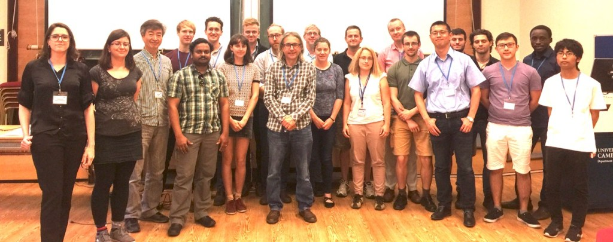
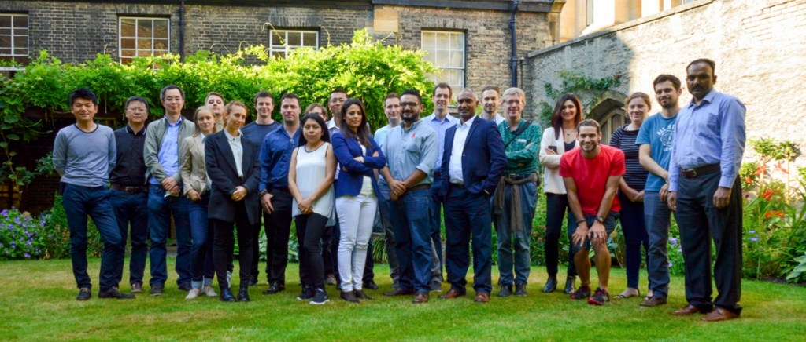
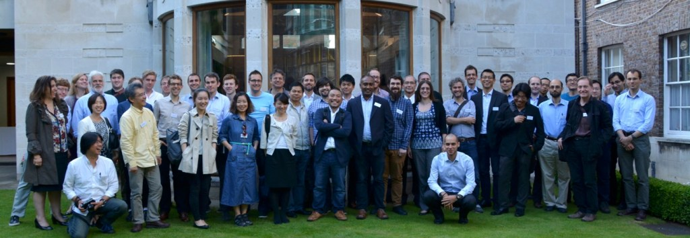
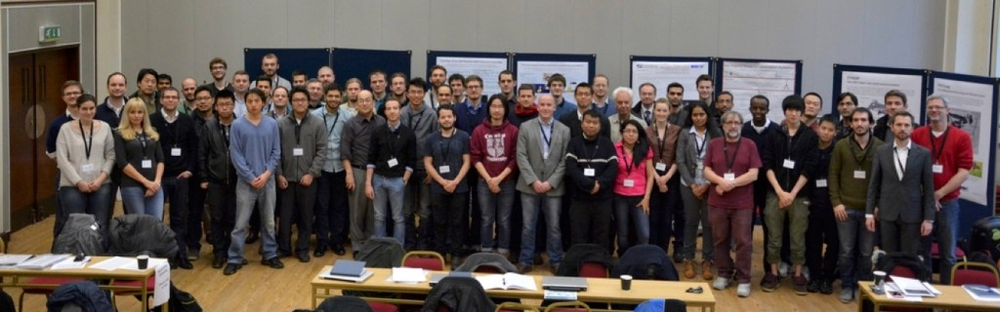
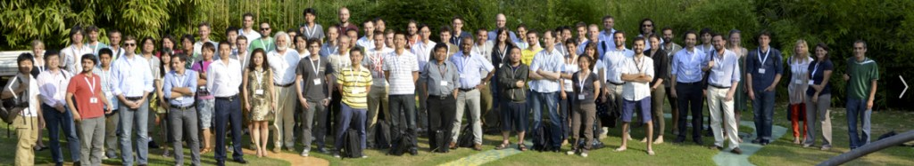
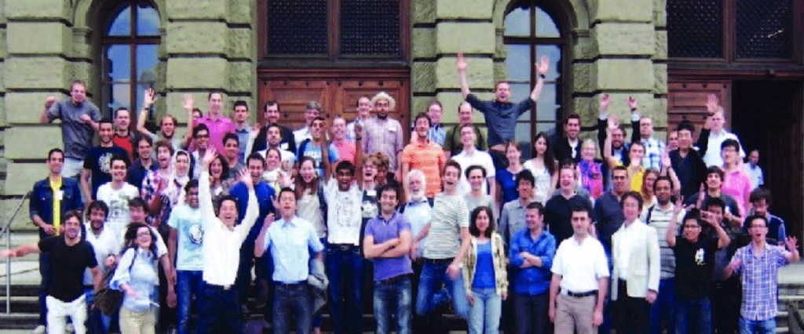

Events & News
Recent news and announcements
- 01 January 2026: Top-of-the-world Learning (Nikkei BP, in Japanese) published
- 08 December 2025: Doraemon Science World, Robotics (Shogakukan, in Japanese) published
- 1 October, 2025, A new branch of Bio-Inspired Robotics Laboratory launching at the University of Tokyo
Talks and conferences
Future Intelligence Talks · Embodied Intelligence Conference
Past events
2026
- 18-20 March 2026: EI’26 International Online Conference on Embodied Intelligence.
2025
- 2-4 April 2025: EI’25 International Online Conference on Embodied Intelligence.
- 18 February 2025 – Embodied Intelligence Workshop (Full day), Newnham College, Cambridge
2024
- 19 November 2024: Future Intelligence talk, 4pm. Zoom access
- 13-17 May 2024: BIRL members participate in the ICRA’24 conference, Yokohama, Japan.
- 25-27 March 2024: ‘FOODLY’ Project @ IFE Manufacturing 2024 exhibition
- 20-22 March 2024: EI’24: International Online Conference on Embodied Intelligence.
- 6 March 2024: Embodied Artificial Intelligence and Evolutionary Soft Robotics Workshop (FULL)
2023
- 08 November 2023: ‘FOODLY’ Project @ REAP’23 Conference
- 26 October 2023: Cambridge Workshop on Underwater Animal/Robot Locomotion
- 13-15 September 2023: TAROS’23/Agriforwards CDT/Joint Robotics CDT Conference
- 3 April 2023: Embodied Intelligence and Soft Robotics workshop at Robosoft 2023
- 22-24 March 2023: EI-2023: International Online Conference on Embodied Intelligence. Free registration here.
- 21-22 February 2023: ‘Understanding Intelligence’ Workshop (invitation only).
2022
- 8-9 December 2022: EPSRC Networking Workshop on Soft Robotics for Mixed Reality
- 4 April 2022: Embodied Intelligence Workshop at International Conference on Soft Robotics 2022
- 28 Jan 2022: Press release of Remote control of floating objects
- 21 Mar 2022: Postdoc opening for Bio-Inspired Soft Robotics
2021
- 05 November 2021: Post-graduate Open Day – Department of Engineering
- 16 October 2021: Agriforwards CDT New Cohort Welcome Event
- 24 September 2021: OHMC 2 PPF event
- 01-02 July 2021: EPSRC ‘Agriforwards’ CDT Annual conference ‘Research and Innovation in Computer Vision for the Agri-Food Industries’
- 28-30 June 2021: EPSRC ‘Agriforwards’ CDT & IEEE RAS Summer School
- 24-26 March 2021: 2021 International Workshop on Next Generation Embodied Intelligence.
2020
- 5 June 2020: BIRL 10th Anniversary Re-union Remote Conference
- June 2020: BT Applied Research & Tommy Flowers Network Thought Leadership event: Agri-Food Robot Revolution
- 2020: IROS 2020 Workshop: Robot-Assisted Training for Primary Care: How can robots help train doctors in medical examinations?
- HRI2020 Workshop on Human Robot Medical Interaction (23.03.2020)
- First Annual Conference of Agri-Food Robotics Centre of Doctoral Training (19-20.03.2020)
2018
- IEEE International Conference of Soft Robotics (RoboSoft2018), Livorno, Italy, April 24-27, 2018.
2016
- JSPS-EPSRC UK-Japan Workshop on Bio-inspired Soft Robotics, Cambridge UK, 14-15 July 2016.
2014
- International Workshop on Future of Robotics Based on Biological Principles, Cambridge, UK, December 11-12, 2014.
2013
- CSF International Workshop on Soft Robotics, Monte Verita, Switzerland, July 2013.
2010
- SNF-JSPS Swiss-Japan Joint Seminar on “Soft Robotics: Morphology, materials, and functionalities”, University of Tokyo, June 20-23, 2010.
News archive
Historical announcements, including past recruitment notices, are retained below.
2021
24 September 2021 – OHMC 2 PPF event
16 October 2021 – Agriforwards CDT New Cohort Welcome Event
05 November 2021 – Post-graduate Open Day – Department of Engineering
01-02 July 2021 – EPSRC ‘Agriforwards’ CDT Annual conference ‘Research and Innovation in Computer Vision for the Agri-Food Industries’
01-02.07.2021 – EPSRC ‘Agriforwards’ CDT Annual conference ‘Research and Innovation in Computer Vision for the Agri-Food Industries’
28-30.06.2021 – EPSRC ‘Agriforwards’ CDT & IEEE RAS Summer School
24-26.03.2021 – ‘Embodied Intelligence’ International Workshop: the interviews with researches and presentation videos.
23.02.2021 – Dr Fumiya Iida’s interview on the Soft Robotics research (IEEE RAS Technical Committee web-site) LISTEN HERE
16.02.2021 – Cambridge engineers unveil Digital Twin to support the ‘future of farming’. READ MORE
2020
01.12.2020 UTokyo-Cambridge Voices Symposium on Information and Robotics Technology
26.11.2020 Postdoc position available in Soft Robotics
05.06.2020 BIRL Re-union remote conference
01.06.2020 Press Release: A good egg: robot chef trained to make omelettes, video, publication
24.04.2020 News article: EPSRC Centre of Doctoral Training Agri-Food Robotics First Annual Conference
22.04.2020 New Publication: Electronic skins and machine learning for intelligent soft robots, Science Robotics
27.03.2020 PhD Studentship available: 15 PhD studentships are available in Marie Curie Innovative Training Network SMART Soft Robotics Project
23.03.2020 Human-Robot Medical Interaction workshop
16.03.2020 New member: George Walker joined BIRL
01.03.2020 New member: Dr Josie Hughes joined BIRL (again)
17.01.2020 New Publication: Large scale automated investigation of Free-Falling Paper shapes via iterative physical experimentation, Nature Machine Intelligence, video
13.01.2020 New member: Dr Simon Hauser joined BIRL (again)
13.01.2020 New Publication: Improving Robotic Cooking using Batch Bayesian Optimization published
2019
26.11.2019 HRI2020 Workshop on Human Robot Medical Interaction
01.11.2019 New job created for Principal Technician (Robotics)
Application deadline: 29.10.2019
01.10.2019 PhD studentships (starting October 2020) available for the EPSRC Agri-Food Robotics CDT
02.09.2019 CUED News: The wall-climbing robot inspired by a leech
01.06.2019 Launch of H2020 FET-OPEN Project on Self-Healing Soft Robotics (News)
01.04.2019 Launch of EPSRC Centre of Doctoral Training on Agri-Food Robotics (News)
2016
13.06.2016 Fumiya talks to ‘Click’ (BBC programme covering advance of technological research)
2015
12.08.2015 Fumiya Iida talks at BBC Victoria Derbyshire
12.08.2015 BBC NEWS: Robots learn to evolve and improve
12.08.2015 University of Cambridge: The origin of (robot) species
Follow ups by: NBC News, The Telegraph, Mail Online, The Times, Motherboard, Ifl Science, Mashable, IO9, E&T, HNGN, Business Weekly, Bioscience Technology, Gizmodo, RT, China.org.cn, Gizmag, English.news.cn, Cambridge News
21.07. 2015 IEEE Spectrum: Mother Robots Build Children Robots to Experiment With Artificial Evolution
01.03.2015 We have moved to the University of Cambridge. Click here for the new web page.
04.02.2015 Two papers by Kim, Y. et al. and Günther, F. et al. have been accepted for IEEE ICRA 2015
2014
10.09.2014 A paper by Wang, Brodbeck and Iida on tool manufacture and use has been published by Journal of the Royal Society Interface
24.07.2014 A paper by Nurzaman et al. has been accepted for publication by Bioinspiration & Biomimetics
16.07.2014 A paper by Culha et al. has been accepted for publication by Sensors
13.05.2014 A paper by Nurzaman et al. has been published in Entropy
22.04.2014 A paper by Marques et al. has been accepted for publication by PLoS Computational Biology
22.04.2014 A paper by Pfeifer et al. has been accepted for publication by Trends in Cognitive Science
20.03.2014 Noonee, one of Swiss national start-up teams ready for a trip to the US
17.01.2014 A paper by Wang et al. has been published in Bioinspiration & Biomimetics (also see coverage by New Scientist, Discovery Channel, Phys.org, Electronic Products, Ny Teknik, Futura Sciences, Biofutur)
14.01.2014 Three papers by Wang et al., Brodbeck, Guenther et al. have been accepted for IEEE ICRA 2014
07.01.2014 The proposal for IEEE ICRA 2014 workshop for soft and stiffness controllable robots for minimally invasive surgery is accepted
2013
26.12.2013 A paper by Nurzaman et al. has been published in PLOS ONE (also see coverage by ETH News, Tages Anzeiger)
07.11.2013 Successfully organized IEEE/RSJ IROS 2013 Workshop on Soft Technologies for Wearable Robots, 07/11/2013, Tokyo, Japan
23.10.2013 Keith Gunura and Bryan Anastasiades were accepted for Venture Kick Stage 2
11.10.2013 Dr. Kohei Nakajima received a Hakubi award from Kyoto University in Japan
25.-29.09.2013 Birl supported art exhibition Natural Intrinsic by Mara Elsa in Zurich
14.-19.07.2013 Successfully organized 2013 International Workshop on Soft Robotics (SoftRobot2013), Monte Verita, Ascona, Switzerland
26.06.2013 Spin-off Noonee’s website is ready http://www.noonee.ch/
17.06.2013 Paper co-authored with Blumberg from University of Iowa has been published in Current Biology (also see coverage by National Geographic)
04.06.2013 The Venture Kick application was accepted
24.04.2013 Papers by Reis et al., Wang et al., and Leach et al. have been accepted by IEEE/ASME Transactions on Mechtronics, IEEE Transactions on Robotics and IEEE/ASME Transactions on Mechtronics respectively
2012
26.08.2012 Fumiya’s invited talk at EU Cog III
12.08.2012 Paper by Reis & Iida has been accepted by Artificial Life
14.07.2012 Fumiya Island in Robot Film Festival
01.07.2012 Dr. Hansruedi Frueh is coming to visit our lab
18.-22.06.2012 Successfully organized 2012 ETH Robotics Summer School on Soft Robotics, Zurich, Switzerland
19.05.2012 Paper by Wang & Iida has been accepted by IEEE/ASME Transactions on Mechatronics
02.04.2012 Welcome new member: Utku Culha
02.04.2012 Welcome new member: Surya Nurzaman
09.03.2012 Bironz meeting by Dr. Scaramuzza, and Dr. Jafari 12.15pm, HG D3.2
17.01.2012 Fumiya’s invited talk at Harvard Bio-Inspired Engineering Symposium
01.01.2012 Welcome new member: Amir Jafari
2011
16.12.2011 Robotics Seminar by Prof. Metta, and Prof. Schaal 15.15pm, ML E12
09.12.2011 Bironz meeting by Dr. Brandeli, and Prof. Sorkine 12.15pm, HG G5
11.11.2011 Bironz meeting by Dr. Roggen and Dr. Paradalier, 12.15pm, HG G5
07.11.2011 Seminar on Musculoskeletal humanoids by Prof. Nakanishi and Dr. Osada, 2.15pm, HG F26.1
14.10.2011 Bironz semester starts
19.09.2011 Fumiya’s new lecture series “bio-inspired motor control“
16.09.2011 Prof. Fumiya Iida appointed as a program committee member of the International Program Committee (IPC) for the 10th IFAC Symposium on Robot Control (SYROCO 2012) in Dubrovnik, Croatia. SYROCO 2012.
12.09.2011 New member: Xiaoxiang Yu
12.09.2011 Fumiya’s invited talk at the ICMC2011.
30.07.2011 Fumiya’s invited talk at the ICINCO2011.
15.07.2011 Robotics summer school – Case study session at ETH Zurich.
22.06.2011 Marc’s paper accepted for IROS2011.
16.06.2011 NCCR Robotics Symposium at ETH Zurich.
01.06.2011 Welcome new member: Luzius Brodbeck.
05.05.2011 Soft Robotics session at the fet11 conference.
22.04.2011 Murat’s paper accepted for AIM2011.
13.04.2011 BIRL supports robotics researchers in Japan.
23.03.2011 Fumiya’s invited talk at the Robolift11 conference.
14.03.2011 PC Member of the International Workshop on Intelligent Robotics.
09.03.2011 [Special Issue] on Bio-Inspired Robotics in Journal of Robotics and Mechatronics.
04.03.2011 BiRoNZ-Meeting, 12.00-13.00, HG D 7.2.
13.02.2011 Special Issue on Soft Robotics in Advanced Robotics Journal. read more.
01.02.2011 Welcome new members: Hugo Marques (Postdoc), Derek Leach (PhD).
24.01.2011 New paper published in International Journal of Robotics Research (IJRR).
20.01.2011 Invited for program committee member of European Conference of Artificial Life (ECAL2011).
2010
10.12.2010 Invited for program committee member of Genetic and Evolutionary Computation Conference (GECCO2011).
01.12.2010 NCCR Robotics launched successfully!
01.12.2010 ETHIIRA Grant Proposal on “Autonomous Robotic Growth with Thermoplastic Adhesive” was approved!
05.11.2010 BiRoNZ-Meeting, 12.00-13.00, HG D 1.2.
08.10.2010 BiRoNZ-Meeting, 12.00-13.00, HG E 5
21.09.2010 Lecture of Prof. Fumiya Iida, Bio-Inspired Motor Control, 9.00-12.00, HG E 22.
20.09.2010 New member: Kevin Frey, master student, semester project, leaving 20.12.2010.
07.09.2010 Talk of Dr. Takuya Hashimoto, visiting scientist, academic guest from Tokyo University of Science, Japan: Robot Technology for Supporting Human Activity, 12.15 – 13.00, LFO G 25.
01.09.2010 New members: Dr. Takuya Hashimoto, visiting scientist, academic guest from Tokyo University of Science, Japan, dept. of mech. eng., leaving 15.09.2010.
Marc Osswald, master student, master project,finishing 28 February 2011, and Juanjo Fernandez Bocanegra, Erasmus student, master project, finishing 28 February 2011.
24.08.2010 New member: Dr. Murat Reis, academic guest from University of Uludag, Engineering Faculty, Görükle-Bursa/ Turkey, research and teaching assistant in mech. eng., leaving 23.08.2011.
01.07.2010 New member: Burcu Karadeniz, guest student from University of Sabanci, Istanbul, Turkey, undergraduate student, finishing 31.08.2010
28.05.2010 Third BiRoNZ Meeting.
11.05.2010 New member: Fabian Müller, master student, semester project, finishing in October 2010.
10.05.2010 New members: Akshay Jain, guest student from India, finished in July 2010.
23.04.2010 Introduction Lecture of Prof. Dr. Fumiya Iida:
“Bio-Inspired Motor Control for Autonomous Robots”
23.04.2010, 17.15, HG F 30, for more details: ETHZ Veranstaltungskalender
16.04.2010 Second BiRoNZ Meeting.
15.04.2010 NCCR Robotics has been approved by the Swiss Government.
25.03.2010 Seminar Jonas Buchli:Robust Control Strategies for Locomotion and Manipulation through Compliance and Force Control. Speaker: Jonas Buchli. HG G 26.1, 3 pm.
05.03.2010 First BiRoNZ Meeting.
01.03.2010 New member: Fabian Günther, master student, semester project, finished in July 2010.
23.02.2010 New member: Cristian Montillo, master student, master degree project, finishing 30.08.2010.
27./28.01.2010 Poster Presentation on Cogsys 2010.
14.01.2010 SNF-JSPS Seminar proposal accepted.
04.01.2010 New members: Christina Lütolf-Aecherli, Pascal Wespe.
2009
22.12.2009 Iida,Tedrake (2010) published in Autonomous Robots.
03.08.2009 BIRL Opening:
The Bio-Inspired Robotics Laboratory was started at the Institute of Robotics and Intelligent Systems, Department of Mechanical and Process Engineering, Swiss Federal Institute of Technology, Zurich.
Media coverage
2024
2023
| DEPARTMENT OF ENGINEERING NEWS |
| The Worshipful Company of Engineers’ visit to the Department of Engineering |
| It’s all in the wrist: energy-efficient robot hand learns how not to drop the ball |
OTHER MEDIA
| HELLO RAYO/GREATEST HITS RADIO |
| Robot chef learns how to make recipes by copying video demos |
| FALSTAFF (International Gourmet Magazine) |
| Cambridge robot learns recipes but gourmet credentials still to be earned |
| THE ENGINEER MAGAZINE |
| Robot chef mimics simple recipes from food videos |
| NEWS.AM, ARMENIA |
| “Cyber cook”: Scientists in Cambridge create a robot that learns to cook by watching videos |
| PSYCHOLOGY TODAY |
| An AI Robot Learns Recipes by Watching Human Chefs |
2022
OTHER MEDIA
| BBC News, United Kingdom |
| Cambridge University trains robot to ‘taste’ as it cooks eggs |
| The CATERER |
| Robot chef learns to ‘taste as you go’ |
| CBS NEWS, USA |
| Engineers develop robot that can taste salt |
| GCC BUSINESS NEWS, UAE |
| This Robot chef is learning to cook & taste just like a human |
| New Food Magazine, USA |
| Forget RoboCop, it’s all about robot chef |
| RAR UK Automation |
| Robot chef trained to “taste food as it goes” |
2021
| Department of Engineering News |
| Join our Bio-Inspired Robotics Lab at Robot Lab Live |
2020
2019
| Department of Engineering News |
| The £2 billion vegetable and the agricultural future of the East |
| Robot uses machine learning to harvest lettuce |
2015
| Department of Engineering News |
| On the origin of (robot) species |
Event photographs
2018 Agri-Food Robotics Workshop

2017 Cambridge Soft Robotics Workshop

2016 UK-Japan Soft Robotics Workshop

2014 FP7 MYOROBOTICS Workshop

2013 International Soft Robotics Conference

2012 ETH Zurich Soft Robotics Summer School
